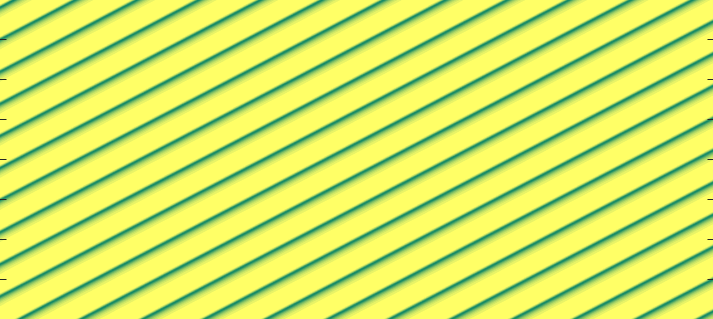
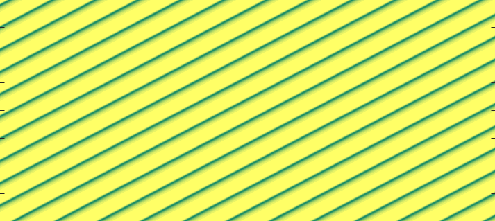

Summary:
The workshop "Mathematical Modelling of Pattern Formation in Biological Systems" will bring together researchers from all career stages who are interested in using mathematical modelling and analysis to improve our understanding of pattern formation phenomena in biology and ecology. Plenary talks will be given by Karen Page (UCL), Jonathan Sherratt (Heriot-Watt), and Philip Maini (Oxford). These will be complemented by short contributed talks and plenty of time for informal discussions, including at a social dinner.
The workshop has been jointly funded by the Mathematical Research Centre at the University of Warwick and a London Mathematical Society Scheme 9 "Celebrating New Appointments" grant.
Important details:
Date: 15 September 2025
Time: 10:30 - 17:00, followed by a social dinner - all welcome! Details to follow.
Location: Zeeman Building, University of Warwick
Cost: Free, thanks to the London Mathematical Society (LMS) and the Mathematics Research Centre at the University of Warwick (MRC).
Registration deadline: 31 August 2025 - Places are limited. Register early to avoid disappointment.
Abstract submission deadline: 1 August 2025; decision within 2 weeks
Invited speakers: Karen Page (UCL), Jonathan Sherratt (Heriot-Watt), and Philip Maini (Oxford)
Organiser: Lukas Eigentler (Warwick)
Questions? Contact Lukas Eigentler